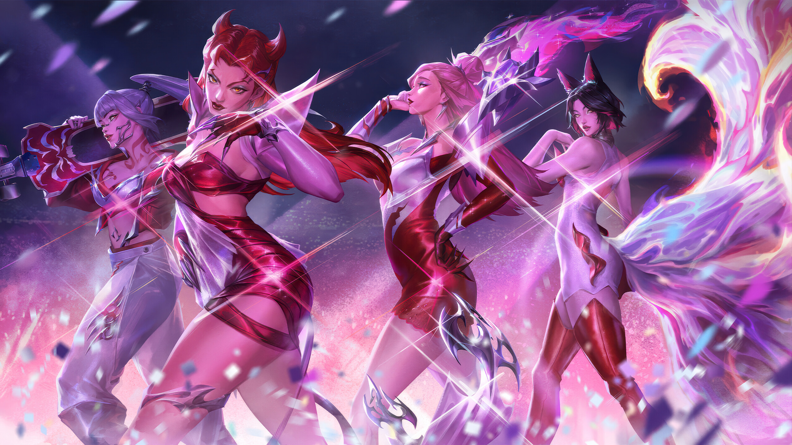

Виртуальная группа вселенной League of Legends

K/DA — это виртуальная гёрл-группа, состоящая из четырёх персонажей компьютерной игры League of Legends: Ари, Акали, Эвелинн и Кай’Сы. Каждую из участниц группы озвучивают реальные исполнительницы.
Название «K/DA» — это внутриигровой термин в League of Legends, показывающий соотношение убийств и содействий игрока к смертям. Создание K/DA было частично основано на желании разработчиков Riot Games «видеть свою компанию в будущем как полноценный музыкальный лейбл тоже».
Музыка K/DA сочетает в себе корейский K-pop, западный хип-хоп и электронную танцевальную музыку. В 2020 году к записи заглавного трека «MORE» в качестве приглашенного гостя также присоединилась Серафина (Seraphine).
Нажмите на кнопки, чтобы проверить работу скриптов: